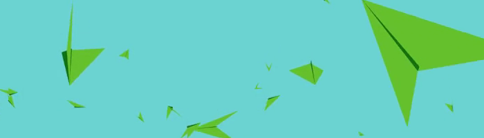
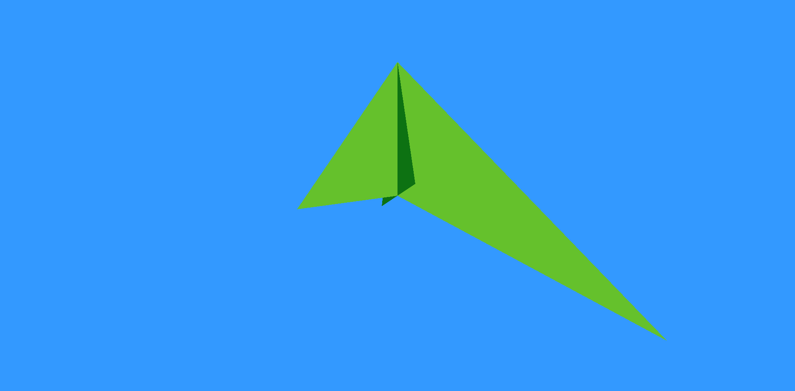
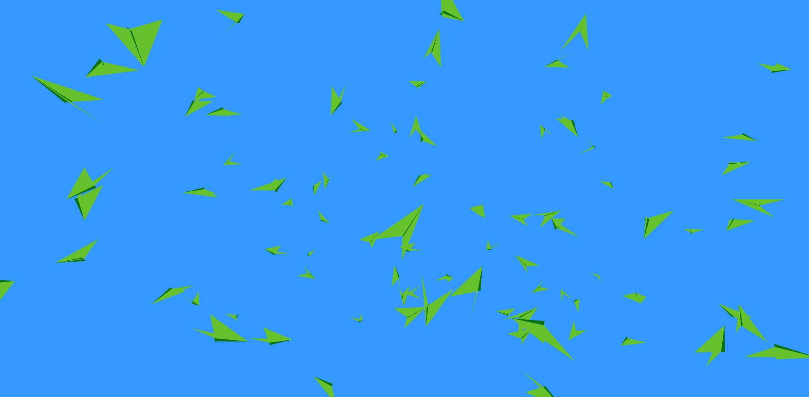

Learning Three.js: Part 1
This week I'm working on some visualization using Three.js. I was inspired by an example of minimalistic flocking birds, and I'm going to try and recreate it without looking at their source.
Step one, let's figure out how to display geometry on the screen. It looks like you can specify vertices and faces, and add them to a mesh to render. I set up the the initial bird prototype with triangles.
Now that there's one bird, we just need MORE. I created 100 bird meshes and placed them in random positions on the screen. The birds rotation euler values can be set to random numbers between 0-360 to specify a random rotation.
Birds usually aren't frozen still, so I gave each bird a 1% chance to lerp to a new rotation per frame. Then, I added a translation in the direction that the bird is facing, to produce animation.
That was a pretty fun intro to Three.js for me. This is my first project using JavaScript, and I'm starting to appreciate the flexability it offers. The rendering speed of WebGL was also a pleasant surrpise. Even with 1,000 bird objects on the screen running un-optimized movement code, the Chrome page was still running at a smooth 60fps.
In the next section I'd like to work on making the birds more interactive. We're still missing flapping, and maybe a prettier background would be nice. Another idea is to implement a simple flocking or pathfinding AI. To be continued...